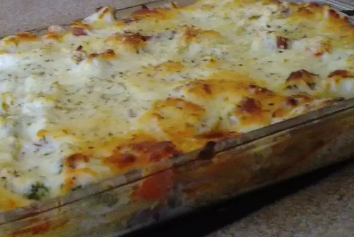

Lasagna

Description
Lasagne (US: /ləˈzɑːnjə/, also UK: /ləˈzænjə/,[1] Italian: [laˈzaɲɲe]; singular lasagna,
Italian: [laˈzaɲɲa]) are a type of pasta, possibly one of the oldest types,[2] made of
very wide, flat sheets.
Ingredients
- 4 boneless skinless chicken breasts, cut into 1/4-inch strips
- 1 cup sour cream
- 1 cup salsa
- salt and ground black pepper to taste
Steps to make
- Combine chicken, lime juice, and taco seasoning in a large bowl. Stir to make sure chicken is evenly covered.
- Cook chicken mixture over medium heat until firm, about 15 minutes.
- Bake in the preheated oven until noodles are tender and cheese is melted, about 1 hour.